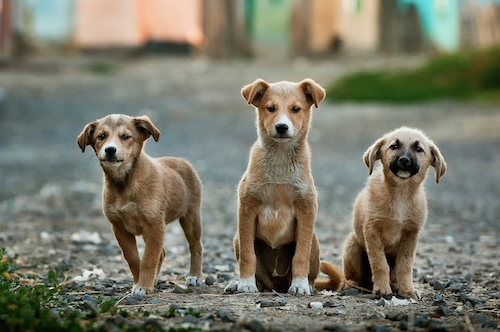

I like dogs because they are smart, caring, and cute. I have one dog and he is one of my favorite people. I prefer dogs over cats because they are more fun and smart. Cats are more calm and kind of boring, in my opinion. I think both are cute and good in their own ways, but I just think dogs are better. Dogs can learn more tricks, you can interact with them, and they are more nicer than cats.
